Public AI logs – Apertus 70B analysis
This section summarizes the analysis of the LiteLLM_SpendLogs Public AI logs for the
swiss-ai/apertus-70b-instruct model group. It focuses on four main aspects:
usage & workload, performance & efficiency, behavioral stability, and user-level clustering.
Usage & workload profiling
Time-series usage patterns, hourly/weekday behavior, request volume per session, and concentration of usage across end users ("whale" curves).


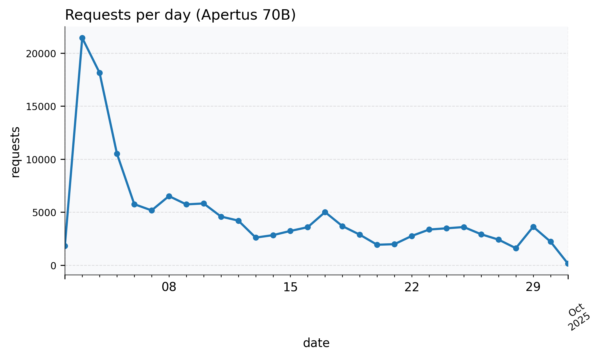

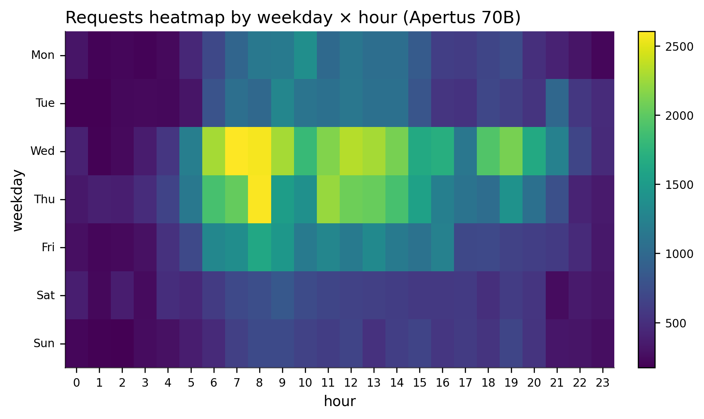


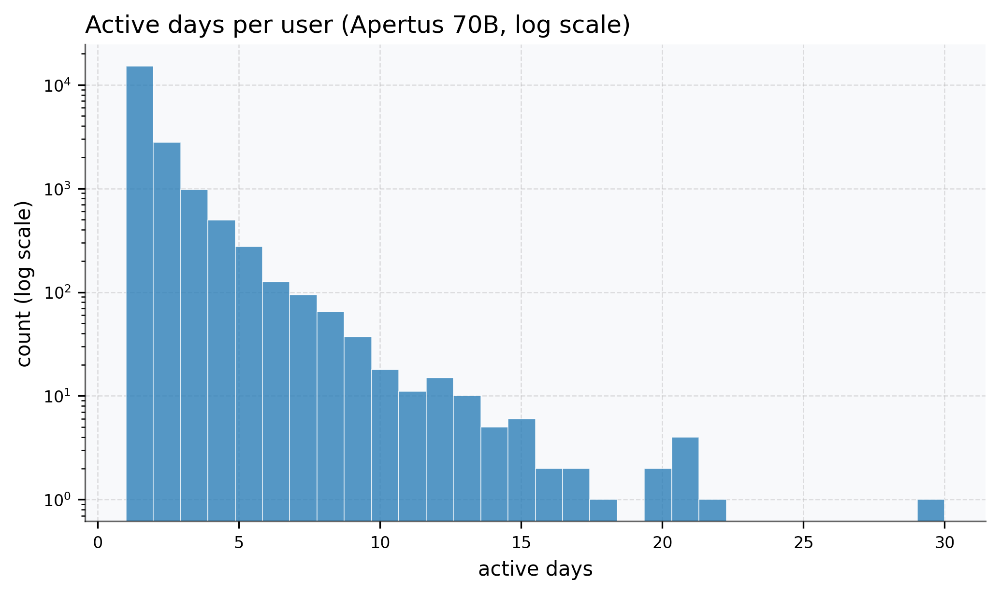


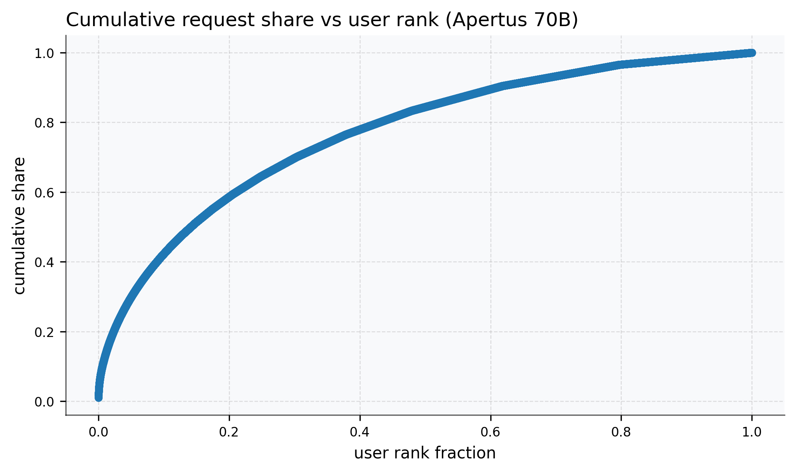
Performance & efficiency
Daily averages and quantiles for latency, TTFT, generation time, tokens per request, success rate, and latency shares, plus trimmed latency/TTFT/gen distributions and latency-versus-load plots. Log-scale variants are included where appropriate.


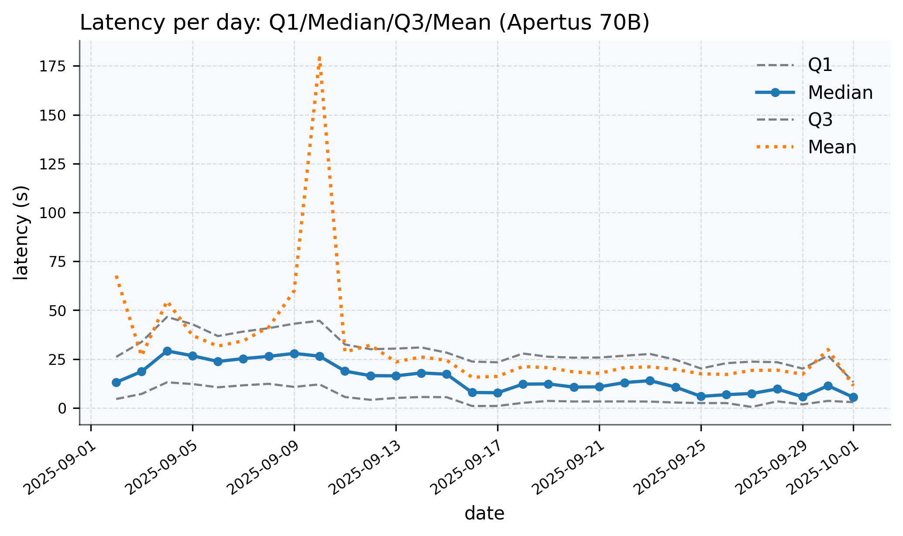
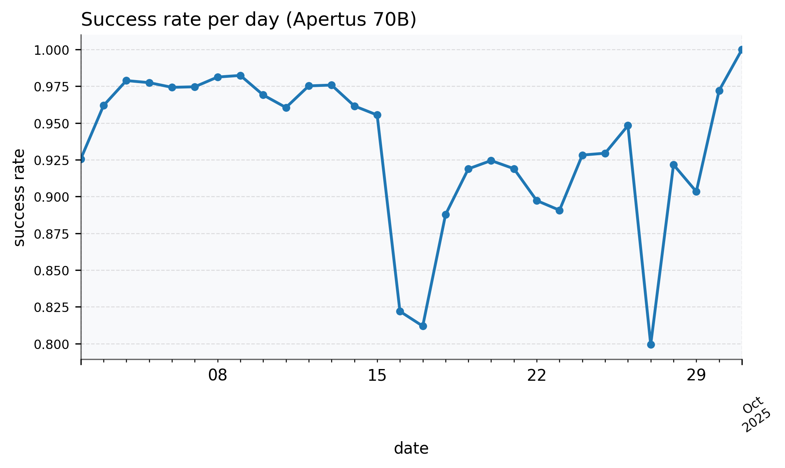
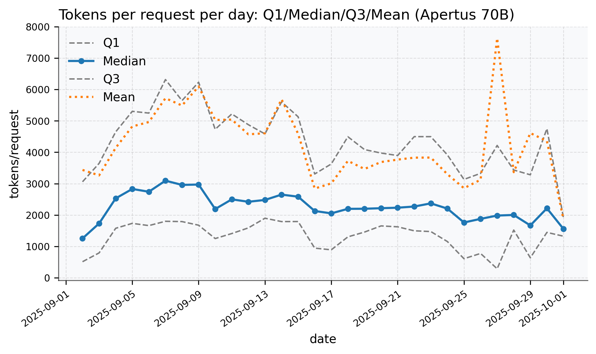


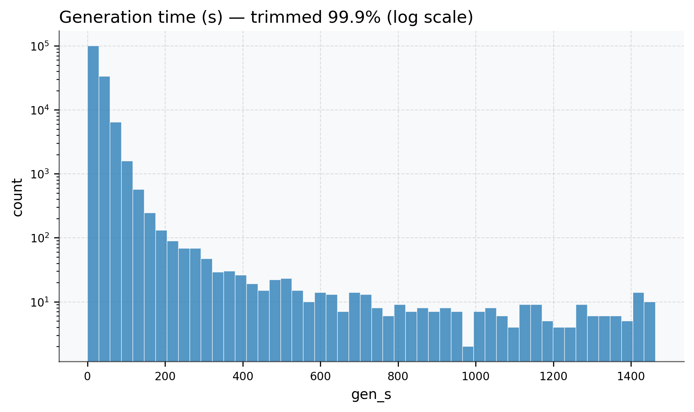


Behavior & stability
Prompt/completion length distributions (with log-scale variants), daily quantiles of completion length, prompt-vs-completion scatter, token-composition ratios (prompt/completion), inter-arrival behavior, and correlation plots between tokens and latency components.


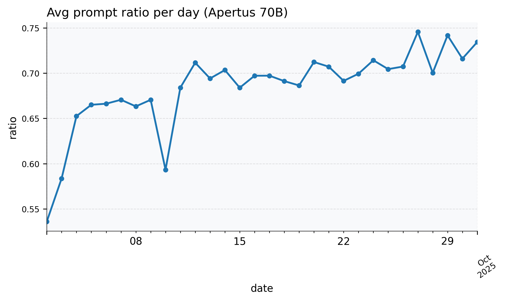


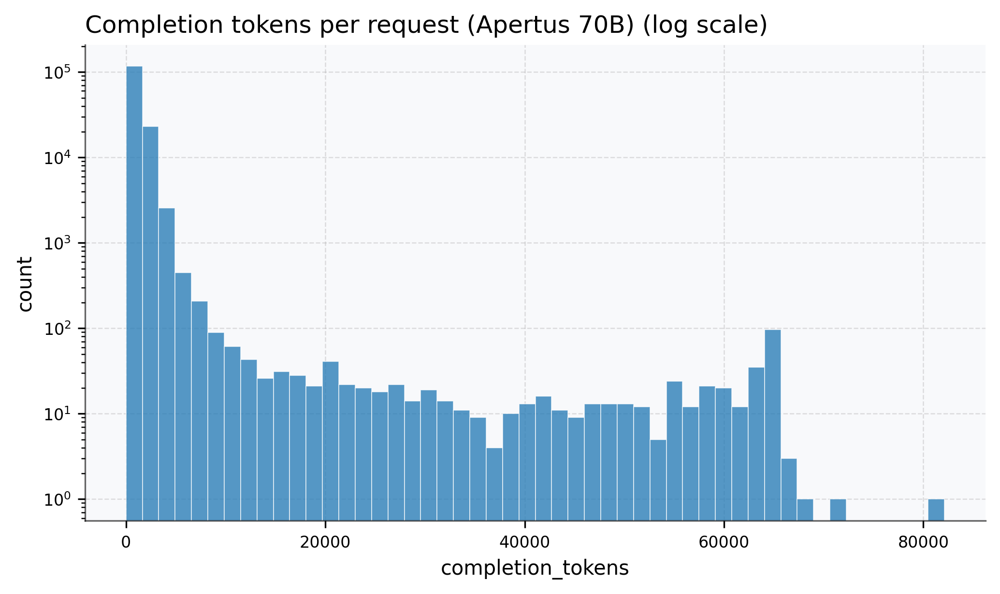


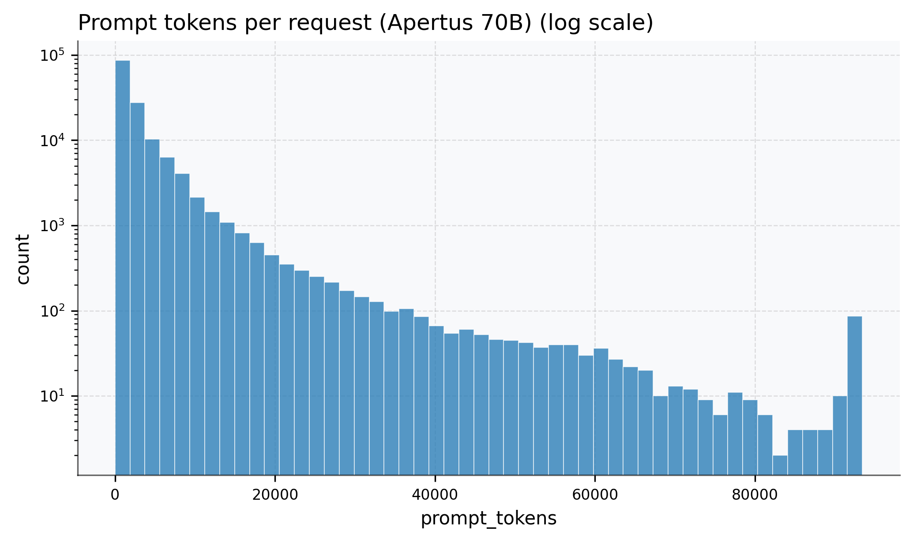

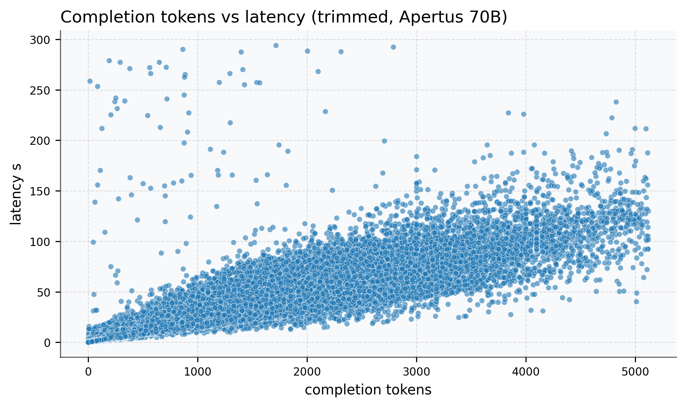


User-level clustering
Per-end-user feature vectors (volume, temporal behavior, token structure, latency, and success rate) are clustered with KMeans (model selection via silhouette + degeneracy checks). PCA is used for 2D visualization, and per-feature cluster profiles are shown.


Additional user-level clustering outputs:
- Cluster summary TXT: apertus70b_cluster_summary.txt
- Feature summary CSV: apertus70b_feature_summary.csv
Preview cluster summary TXT
{
"k_selected": "3",
"silhouette": "0.311",
"clusters": [
{
"cluster": 0,
"n_users": 5162,
"median_requests": 10.0,
"median_req_per_active_day": 4.333333333333333,
"feature_means": {
"request_count": 14.162340178225493,
"n_unique_providers": 1.3773731111972103,
"n_unique_sessions": 14.162340178225493,
"active_days": 2.750484308407594,
"activity_span_days": 7.707069994988754,
"requests_per_active_day": 6.216659034997942,
"mean_inter_req_s": 100859.55707312589,
"most_active_hour": 11.577876791941108,
"weekday_fraction": 0.8324298457578087,
"avg_tokens_per_req": 4452.236413407283,
"avg_completion_tokens": 1320.5716021919395,
"completion_ratio_mean": 0.36974754046235814,
"prompt_to_completion_ratio_mean": 9.060335639627871,
"mean_latency_s": 48.00222757958981,
"latency_std_s": 61.66045196904945,
"mean_completion_latency_s": 34.695195223359796,
"success_rate": 0.9187079585247881
}
},
{
"cluster": 1,
"n_users": 265,
"median_requests": 1.0,
"median_req_per_active_day": 1.0,
"feature_means": {
"request_count": 1.8150943396226416,
"n_unique_providers": 1.0150943396226415,
"n_unique_sessions": 1.8150943396226416,
"active_days": 1.0113207547169811,
"activity_span_days": 0.036087588312368975,
"requests_per_active_day": 1.8,
"mean_inter_req_s": 2101.354954860737,
"most_active_hour": 10.535849056603773,
"weekday_fraction": 0.8578616352201257,
"avg_tokens_per_req": 1.0715902964959567,
"avg_completion_tokens": 0.3363522012578616,
"completion_ratio_mean": 0.0056399244094886124,
"prompt_to_completion_ratio_mean": 0.035100752462535696,
"mean_latency_s": 0.009571069182389936,
"latency_std_s": 0.02117580946801004,
"mean_completion_latency_s": 0.00970642857142857,
"success_rate": 0.003090745732255166
}
},
{
"cluster": 2,
"n_users": 14669,
"median_requests": 2.0,
"median_req_per_active_day": 2.0,
"feature_means": {
"request_count": 3.035244392937487,
"n_unique_providers": 1.010907355647965,
"n_unique_sessions": 3.035244392937487,
"active_days": 1.0789419865021475,
"activity_span_days": 0.19238650777701405,
"requests_per_active_day": 2.8827232031267758,
"mean_inter_req_s": 8838.743193025857,
"most_active_hour": 11.846410798282092,
"weekday_fraction": 0.8538263122641743,
"avg_tokens_per_req": 2814.383936469375,
"avg_completion_tokens": 1251.7203605054176,
"completion_ratio_mean": 0.44868439069545624,
"prompt_to_completion_ratio_mean": 3.0592791340876286,
"mean_latency_s": 42.82069983989905,
"latency_std_s": 16.26337143177401,
"mean_completion_latency_s": 33.78482228322934,
"success_rate": 0.9954268639080147
}
}
]
}
apertus_sft_mixture – language-wise clustering
This section summarizes the language-wise clustering results for the
swiss-ai/apertus-sft-mixture dataset. All figures and tables share the same
RUN_TAG = small_train_conversation_embeddings__sentence-transformers__paraphrase-multilingual-mpnet-base-v2_langwise as the poster.
All languages – cluster plots


Cluster sizes


Feature heatmaps


All languages – top words and representatives
Top 5 words per final cluster (all languages)
| cluster | word1 | count1 | word2 | count2 | word3 | count3 | word4 | count4 | word5 | count5 |
|---|---|---|---|---|---|---|---|---|---|---|
| af | waard | 482 | syn | 272 | foar | 260 | troch | 224 | dy't | 167 |
| ar | نعم، | 167 | الدولة | 150 | رغم | 123 | عبر | 106 | الحرب | 105 |
| bg | век | 106 | българия | 90 | част | 86 | какви | 81 | града | 65 |
| bn | হয়। | 192 | করে। | 147 | হিসেবে | 123 | কীভাবে | 105 | সালে | 105 |
| ca | coma | 1157 | foguèt | 395 | xxx | 358 | sco | 275 | sos | 243 |
| cs | roce | 231 | jaký | 144 | například | 131 | jaké | 129 | století | 101 |
| cy | mae | 660 | roedd | 359 | cael | 298 | wedi | 283 | o'r | 248 |
| da | hvilket | 138 | gennem | 101 | især | 98 | selvom | 79 | mellem | 78 |
| de_c0 | rumantsch | 370 | übersetze | 368 | deutsche | 367 | liste | 365 | grischun-begriffen | 365 |
| de_c1 | übersetze | 288 | liste | 288 | deutsche | 153 | sutsilvan-begriffen | 152 | deutscher | 136 |
| de_c10 | geschichte | 795 | welt | 383 | figur | 280 | leser | 246 | könnten | 231 |
| de_c2 | grischun | 230 | übersetze | 224 | liste | 224 | deutscher | 224 | begriffe | 224 |
| de_c3 | liste | 614 | übersetze | 599 | deutscher | 395 | begriffe | 392 | deutsche | 210 |
| de_c4 | satz | 242 | sag | 234 | idiom | 234 | grischun | 79 | rumantsch | 74 |
| de_c5 | liste | 493 | python | 468 | funktion | 415 | return | 411 | code | 300 |
| de_c6 | vun | 2115 | huet | 1188 | ass | 940 | isch | 784 | vum | 624 |
| de_c7 | wichtig | 137 | auswirkungen | 133 | rolle | 133 | führen | 118 | wasser | 112 |
| de_c8 | antwort | 636 | daten | 607 | wichtig | 405 | unternehmen | 396 | helfen | 388 |
| de_c9 | könnten | 246 | erstellen | 186 | kunden | 179 | sicher | 155 | stellen | 148 |
| de_noise | vun | 483 | helfen | 380 | funktion | 376 | reise | 349 | zahlen | 342 |
| el | είναι | 124 | μπορεί | 68 | όπως | 55 | ή | 49 | ότι | 40 |
| en_c0 | key | 5290 | input | 4870 | provide | 4015 | person | 3446 | focusing | 3344 |
| en_c1 | project | 3181 | input | 2822 | hope | 2712 | rewrite | 2586 | re-writing | 2567 |
| en_c10 | detailed | 973 | thinking | 914 | provide | 882 | respectful | 705 | understanding | 603 |
| en_c11 | cells | 1082 | blood | 661 | cell | 618 | dna | 567 | body | 524 |
| en_c12 | reaction | 5106 | bond | 3742 | carbon | 3632 | acid | 3608 | times | 3347 |
| en_c13 | voltage | 2266 | current | 1541 | power | 1298 | circuit | 1254 | output | 847 |
| en_c14 | energy | 5172 | field | 4135 | quantum | 3808 | time | 3483 | e.g | 3381 |
| en_c15 | sentence | 5643 | writing | 4326 | concise | 2483 | language | 2340 | clarity | 2338 |
| en_c16 | job | 4836 | career | 4106 | time | 4000 | skills | 3219 | company | 2851 |
| en_c17 | probability | 5159 | game | 3249 | cards | 2654 | player | 2650 | step | 2291 |
| en_c18 | data | 27280 | analysis | 7624 | variables | 6252 | values | 4910 | standard | 4809 |
| en_c19 | times | 12321 | calculate | 10200 | hours | 7902 | time | 7280 | books | 6257 |
| en_c2 | function | 28431 | equation | 25862 | sum | 19433 | f(x | 16374 | set | 15934 |
| en_c20 | return | 17333 | function | 14167 | python | 13589 | list | 12700 | def | 9647 |
| en_c21 | code | 4436 | python | 3227 | return | 2940 | function | 2903 | class | 2870 |
| en_c22 | string | 7450 | return | 6947 | function | 6877 | python | 6359 | def | 4268 |
| en_c3 | triangle | 15715 | angle | 11663 | circle | 10091 | equation | 8842 | distance | 6616 |
| en_c4 | step | 83966 | equation | 28665 | answer | 28325 | solve | 16482 | cdot | 12990 |
| en_c5 | access | 4156 | helpful | 3965 | questions | 3377 | tools | 3214 | answer | 3129 |
| en_c6 | tha | 1325 | ann | 1067 | a’ | 641 | bha | 526 | aig | 375 |
| en_c7 | probability | 3370 | distribution | 1479 | random | 1313 | function | 901 | variable | 574 |
| en_c8 | story | 19130 | character | 16132 | create | 13700 | characters | 10773 | time | 8790 |
| en_c9 | create | 9007 | community | 4757 | social | 4522 | business | 4392 | product | 4249 |
| en_noise | return | 42097 | function | 31861 | def | 30695 | python | 29766 | time | 29193 |
| es_c0 | python | 892 | código | 780 | función | 644 | lista | 635 | datos | 506 |
| es_c1 | datos | 1789 | importante | 1719 | historia | 1704 | vida | 1565 | puedes | 1245 |
| es_noise | función | 402 | números | 266 | datos | 236 | millones | 234 | punto | 225 |
| et_c0 | lɛ | 261 | minn | 203 | ta’ | 159 | bħala | 138 | kien | 136 |
| et_c1 | aastal | 279 | kuidas | 234 | miks | 215 | ning | 182 | olid | 163 |
| et_noise | näiteks | 134 | või | 115 | seotud | 66 | kuidas | 62 | välja | 59 |
| fa | چۆن | 103 | سال | 97 | شهر | 87 | کوردی | 82 | momentum | 81 |
| fi | vuonna | 269 | suomen | 169 | osa | 92 | johti | 79 | vaikuttaa | 71 |
| fr_c0 | fuit | 112 | question | 94 | document | 65 | natus | 62 | vie | 58 |
| fr_c1 | python | 711 | fonction | 647 | return | 606 | code | 589 | def | 499 |
| fr_c2 | données | 1760 | également | 1502 | vie | 1115 | temps | 1089 | exemple | 1052 |
| fr_noise | fonction | 548 | nombre | 498 | également | 453 | nombres | 395 | exemple | 386 |
| he | די | 1815 | און | 1604 | איז | 1547 | א | 1219 | פון | 1062 |
| hi | है। | 1422 | हैं। | 642 | क्या | 399 | जाता | 394 | कारण | 266 |
| hr | godine | 684 | zašto | 410 | poput | 316 | zbog | 281 | tijekom | 267 |
| hu | fontos | 257 | szerepet | 150 | magyar | 120 | különösen | 111 | jelentős | 91 |
| id_c0 | awọn | 509 | daa | 426 | nyɛla | 235 | kɛ | 191 | sing | 176 |
| id_c1 | euskal | 62 | eragin | 45 | daude | 33 | hasi | 33 | gisa | 31 |
| id_noise | û | 83 | sesuai | 57 | kalimat | 57 | eragin | 52 | wayang | 52 |
| it_c0 | python | 790 | codice | 649 | funzione | 624 | numero | 508 | lista | 471 |
| it_c1 | dati | 1128 | lavoro | 537 | possono | 344 | importante | 301 | migliorare | 260 |
| it_c2 | clienti | 361 | creare | 319 | marketing | 235 | prodotto | 203 | possono | 201 |
| it_c3 | storia | 1025 | personaggio | 580 | personaggi | 497 | creare | 474 | possono | 337 |
| it_c4 | idiom | 253 | sag | 252 | satz | 252 | igl | 87 | surmiran | 54 |
| it_c5 | possono | 241 | importante | 187 | causa | 104 | dieta | 103 | sintomi | 102 |
| it_c6 | ła | 2870 | l'è | 764 | comu | 606 | dô | 586 | dâ | 543 |
| it_noise | debbie | 1539 | andrey | 1456 | possono | 783 | numero | 649 | funzione | 641 |
| ja | ホテル | 419 | 名前： | 32 | 生年月日： | 32 | 身長： | 32 | 体重： | 32 |
| ko | 치료 | 1098 | 수 | 1029 | 있습니다 | 675 | 있는 | 340 | 통해 | 265 |
| lt | buvo | 897 | yra | 519 | iš | 305 | į | 293 | metais | 276 |
| lv | gadā | 264 | piemēram | 246 | kāpēc | 232 | tās | 222 | viņš | 144 |
| mk | од | 1043 | како | 689 | што | 563 | ја | 367 | дека | 224 |
| ml | താരതമ്യം | 3 | കമ്മീഷണർ | 2 | പറഞ്ഞു | 2 | ചട്ടക്കൂട് | 2 | ഖണ്ഡിക | 2 |
| ne | ଏବଂ | 13 | ପ୍ରେମ | 11 | ଏହା | 10 | र | 6 | काठमाडौ | 5 |
| nl_c0 | zien | 119 | waardoor | 85 | rol | 82 | grote | 72 | gebruikt | 70 |
| nl_c1 | ‘t | 449 | zien | 212 | ‘n | 196 | waard | 151 | zier | 120 |
| nl_c2 | yezh | 116 | implijet | 110 | brezhoneg | 89 | breizh | 87 | graet | 82 |
| nl_noise | zien | 507 | ‘t | 502 | ‘n | 224 | rol | 200 | kinderen | 186 |
| no | við | 859 | sum | 743 | hann | 673 | eru | 668 | frá | 464 |
| pa | ସ | 9 | ସସସସସସସ | 5 | ସସସସସ | 4 | ਵੀ | 4 | ਨਾ | 4 |
| pl | wieku | 191 | dzieci | 158 | polski | 141 | ôd | 138 | rolę | 134 |
| pt_c0 | disso | 230 | água | 194 | importante | 172 | saúde | 171 | alimentos | 158 |
| pt_c1 | python | 876 | função | 701 | código | 604 | lista | 529 | return | 360 |
| pt_c2 | história | 1084 | criar | 819 | personagem | 603 | mundo | 585 | personagens | 537 |
| pt_c3 | dados | 1353 | análise | 466 | importante | 386 | empresa | 379 | ajudar | 341 |
| pt_noise | função | 742 | disso | 601 | importante | 506 | dados | 502 | números | 450 |
| ro | și | 3352 | precum | 207 | s-a | 135 | deși | 128 | timpul | 104 |
| ru | maria | 1301 | эд | 839 | данных | 806 | страница | 743 | cut | 713 |
| sk | napríklad | 114 | počas | 103 | vplyv | 94 | vrátane | 90 | napriek | 90 |
| sl | leta | 330 | zaradi | 162 | še | 115 | čeprav | 104 | pomeni | 82 |
| so | daa | 276 | waxay | 199 | y^2 | 169 | 2(x^2 | 153 | 2(xu | 150 |
| sq | të | 3112 | dhe | 1483 | një | 1057 | për | 670 | nga | 601 |
| sv | slott | 451 | exempel | 279 | använda | 246 | särskilt | 221 | sverige | 199 |
| sw | lɛ | 1579 | kɛ | 810 | mli | 532 | nɔ | 484 | yɛ | 385 |
| th | ๆ | 6 | set | 4 | จังหวัดนครนายก | 4 | อย่างไรก็ตาม | 3 | ฉันเป็นโมเดลภาษา | 2 |
| tl | kendo | 608 | gik | 593 | kod | 499 | nigi | 331 | nyalo | 330 |
| tr | û | 968 | büyük | 299 | önemli | 298 | şekilde | 265 | özellikle | 261 |
| uk | і | 2821 | ў | 807 | які | 513 | што | 406 | його | 356 |
| unknown | ኣብ | 131 | እና | 86 | እቲ | 42 | ናይ | 41 | ንዓኻ | 39 |
| ur | یەکەم | 3 | کوردی | 3 | باتیفا | 2 | ھەروەھا | 2 | دیکەش | 2 |
| vi | awọn | 331 | ọ | 261 | nke | 249 | dị | 212 | bụ | 168 |
| zh-cn | 结论 | 92 | python | 76 | time | 69 | platform | 65 | json | 64 |
| zh-tw | detailed | 3 | thinking | 3 | error | 3 | 《戰城南》的死者與《大橋墓下》的「征夫」，處境如何？試分述之。 | 2 | 《戰城南》提及烏鴉，《大橋墓下》提及「樹木」、「草根」，用意何在？試分別加以析述 | 2 |
No representatives file found at figs/apertus_clustering/small_train_conversation_embeddings__sentence-transformers__paraphrase-multilingual-mpnet-base-v2_langwise/cluster_representatives_cluster_langwise_final.txt.
English-only – cluster plots


Cluster sizes (English only)


Feature heatmaps (English only)


English-only – word clouds


English-only – top words and representatives
Top 5 words per final cluster (English only)
| cluster | word1 | count1 | word2 | count2 | word3 | count3 | word4 | count4 | word5 | count5 |
|---|---|---|---|---|---|---|---|---|---|---|
| en_c0 | key | 5290 | input | 4870 | provide | 4015 | person | 3446 | focusing | 3344 |
| en_c1 | project | 3181 | input | 2822 | hope | 2712 | rewrite | 2586 | re-writing | 2567 |
| en_c10 | detailed | 973 | thinking | 914 | provide | 882 | respectful | 705 | understanding | 603 |
| en_c11 | cells | 1082 | blood | 661 | cell | 618 | dna | 567 | body | 524 |
| en_c12 | reaction | 5106 | bond | 3742 | carbon | 3632 | acid | 3608 | times | 3347 |
| en_c13 | voltage | 2266 | current | 1541 | power | 1298 | circuit | 1254 | output | 847 |
| en_c14 | energy | 5172 | field | 4135 | quantum | 3808 | time | 3483 | e.g | 3381 |
| en_c15 | sentence | 5643 | writing | 4326 | concise | 2483 | language | 2340 | clarity | 2338 |
| en_c16 | job | 4836 | career | 4106 | time | 4000 | skills | 3219 | company | 2851 |
| en_c17 | probability | 5159 | game | 3249 | cards | 2654 | player | 2650 | step | 2291 |
| en_c18 | data | 27280 | analysis | 7624 | variables | 6252 | values | 4910 | standard | 4809 |
| en_c19 | times | 12321 | calculate | 10200 | hours | 7902 | time | 7280 | books | 6257 |
| en_c2 | function | 28431 | equation | 25862 | sum | 19433 | f(x | 16374 | set | 15934 |
| en_c20 | return | 17333 | function | 14167 | python | 13589 | list | 12700 | def | 9647 |
| en_c21 | code | 4436 | python | 3227 | return | 2940 | function | 2903 | class | 2870 |
| en_c22 | string | 7450 | return | 6947 | function | 6877 | python | 6359 | def | 4268 |
| en_c3 | triangle | 15715 | angle | 11663 | circle | 10091 | equation | 8842 | distance | 6616 |
| en_c4 | step | 83966 | equation | 28665 | answer | 28325 | solve | 16482 | cdot | 12990 |
| en_c5 | access | 4156 | helpful | 3965 | questions | 3377 | tools | 3214 | answer | 3129 |
| en_c6 | tha | 1325 | ann | 1067 | a’ | 641 | bha | 526 | aig | 375 |
| en_c7 | probability | 3370 | distribution | 1479 | random | 1313 | function | 901 | variable | 574 |
| en_c8 | story | 19130 | character | 16132 | create | 13700 | characters | 10773 | time | 8790 |
| en_c9 | create | 9007 | community | 4757 | social | 4522 | business | 4392 | product | 4249 |
| en_noise | return | 42097 | function | 31861 | def | 30695 | python | 29766 | time | 29193 |
No representatives file found at figs/apertus_clustering/small_train_conversation_embeddings__sentence-transformers__paraphrase-multilingual-mpnet-base-v2_langwise/english/cluster_representatives_cluster_langwise_final_en.txt.